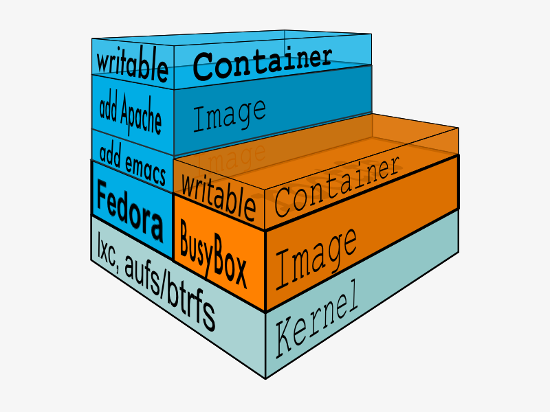

Applications and containers at scale:
OpenShift + Kubernetes + Docker
Presented by:
Steven Pousty
@TheSteve0 on Twitter, IRC, Instagram, Ingress, Skype, SmugMug, and Github
Agenda
- Cover the tech
- Show some demos
- Wrap it up
Assumptions
- You have written web applications
- You like things easy
Platform as a Service


Reasons to Rebuild
Act on lessons from the past three years of running a PaaS
New technologies to build on, including Docker image-based packaging and large associated ecosystem
The New Stack

Defining Container
|
Containers vs. VMs

Layers and UFS
Images: More like git than tar
- Images can be pulled from and pushed to a remote registry.
- Images can be versioned and tagged.
- Containers can be
diffed to show how they differ from their base images.
Linking Containers
 |
|
Docker: Pros and Cons
|
PROS:
|
CONS:
|
Wins
Efficient resource usage
BYOB - bring your own bits
A standard way for people to make container images
Huge ecosystem

kubernetes:
"a system for managing containerised applications across multiple hosts"
declarative model
open source project by Google

Terminology and Architecture

Concepts


- pod: colocated group of Docker containers that share an IP and storage volumes
- service: provides a single, stable name for set of pods and acts as basic load balancer
- replication controller: manages the lifecycle of pods and ensures specified number are running
- label: used to organise and select groups of objects
Components

- cluster: compute resources on top of which containers are built
- node: Docker host running kubelet (node agent) and proxy services
- master: hosts cluster-level control services, including the API server, scheduler, and controller manager
- etcd: distributed key-value store used to persist Kubernetes system state
Wins
Runtime and operational management of containers
Manage related Docker containers as a unit
Container communication across hosts
Availability and scalability through automated deployment and monitoring of pods and their replicas, across hosts
OpenShift
Design Goal
Kubernetes provides a container runtime
OpenShift provides the Application, DevOps, and team environment
Concepts
- application: one or more pods linked together by services; distinct, interconnected components
- config: collection of objects describing combination of pods, services, replication controllers, environment variables, and other components
- template: parameterised version of config for generalised reuse
- build config: object defining source code URI, authentication for change notifications (webhooks), and build type (source-to-image or docker-builder)
- deployment: image and settings for it: replication controller, trigger policies, and deployment strategy

Features
- Ability to build, manage, and deliver application descriptions at scale
- Turning source code into new deployable components
- Support for common workflows, the application lifecycle, and teams
- Integration of CI/CD flows into Kubernetes; trigger builds manually or from code, app, or image changes
- Support for projects and multi-user usage and tracking; default network isolation based on team access control
Demo

Wins
Build a single artifact containing the dependency chain for reproducible deployments
Share common technology stacks and common patterns for rolling out changes
Efficiently manage thousands of applications, auto-scaling components independently and updating them en masse
Easily provision new resources at scale and subdivide them for teams
Responsive, change-aware platform supports fault-tolerant, automated, and repeatable builds and deployments

Conclusion
- We covered A LOT
- For us, it's the Linux story again - come build with us!
- Your world as a sys admin or developer is looking bright
- Use containers to have an agreed upon way to managage server bits
- We can automate some annoying things - i.e. dev env creation or autoscaling
- Template an entire application - infra and code
- OpenShift packages all this technology into one nice package